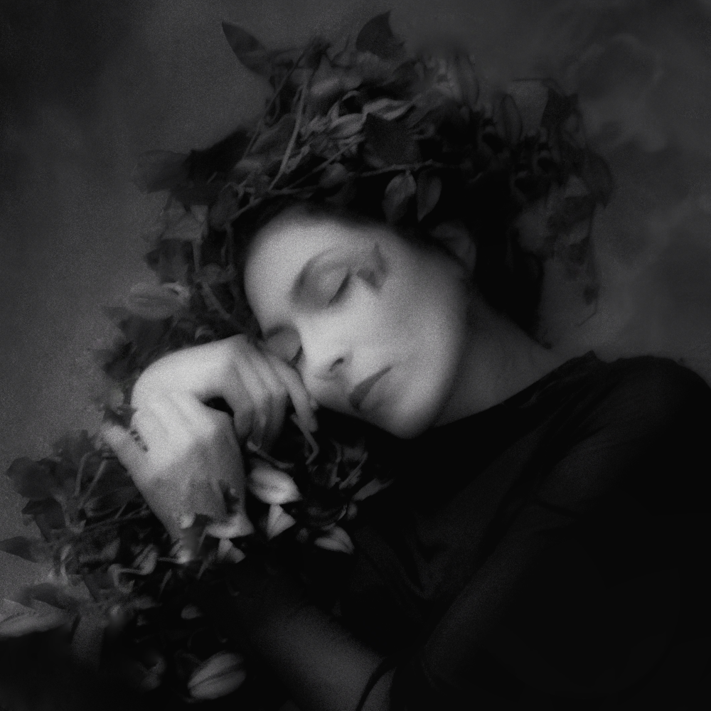

Dilara Pak
 She was born in 1990. She builds her art practice with the possibilities of alternative techniques in photography with an interdisciplinary approach. She continues to produce with her excitement for the fact that she can embody the image more than the healing power of photography.Women's studies, poetic landscapes of nature and autobiographical pursuits are at the forefront among her photography productions. Social Studies teacher at the Ministry of National Education; She is a student at Yıldız Technical University Photography and Video undergraduate program.
1990: Saw her mother's face for the first time.
1996: Realised she was alone for the first time.
1997: Tried flying.
1998: Shared her food with someone on a sand dune.
2003: Began to look at the world through the windows.
2004: Hid for the first time.
2008: Went out of town to study at university.
2010: Started writing. She didn't ease.
2014: Entered the world of children as a teacher.
2017: Started studying art. To lighten her load, she began to produce art.
2018: She realized for the second time that she was alone.
2022: Wrote her personal history in chronological order.